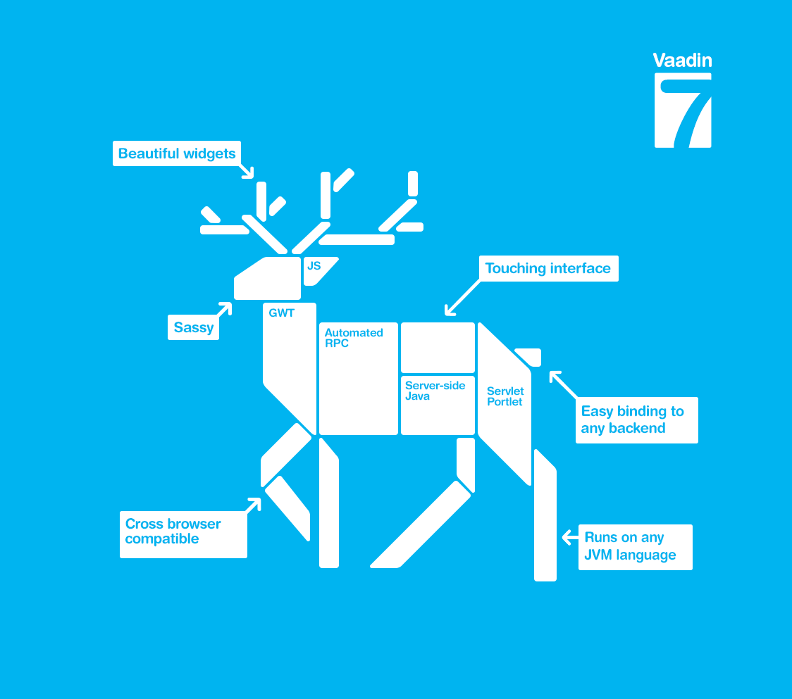

VAADIN
Conoce el poderso API de Java llamado VAADIN
Somos un grupo de entusiastas de la Plataforma Java, enfocados en promover el conocimiento Java en el presente y futuras generaciones de programadores. A través de nuestros foros y reuniones periódicas pretendemos mantenernos en contacto con los últimos desarrollos de la industria, aprender nuevas tecnologías de Java (JVM y otros), conocer a otros desarrolladores, discutir temas técnicos / no técnicos y de la red, en toda la Comunidad Java.